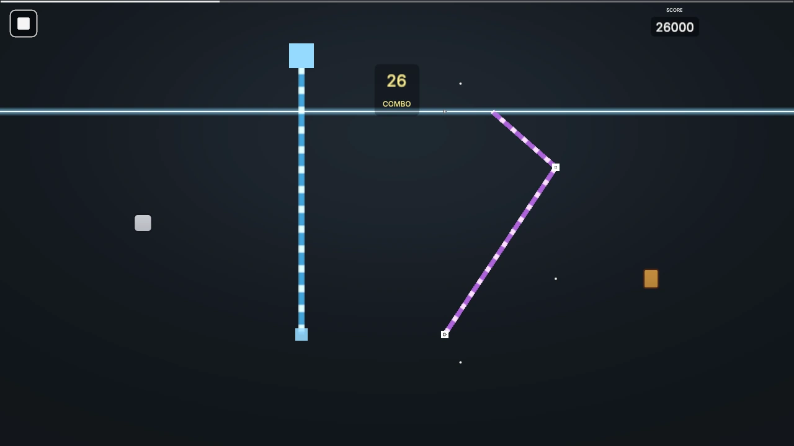
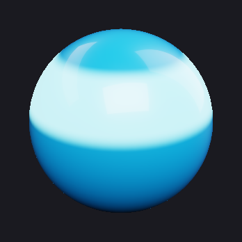

Windows song editorDrop 2D Studio Program / Hard, at 17.20 s. Hold path, timeline and scene preview in one workspace.From the editor to a Galaxy S21 · 19 s with soundOne hold crosses three lanes at 16–21 s. The S21 footage includes the project’s original soundtrack.
Eight engine systems
Desktop test play opens the saved project. The Android packager follows its asset references into an APK. Both players share chart rules and the player view.
Rendering & materials
The Vulkan renderer turns lanes, arcs and disks into editable surfaces. The player interface has its own rendering pass.
Scene and HUD
Three spatial modes render geometry, depth and lighting into a high-dynamic-range (HDR) scene, then convert it for display. Judgment text and the combo counter draw afterwards, so changing exposure keeps them legible. Scan Line uses a fixed camera and ordered 2D compositing.
Appearance and hit anchors
Hold ribbons follow chart paths. A material can move a highlight or displace vertices while the CPU retains the hit anchors. An appearance upgrade is tested both by comparing the images and by measuring where the notes can be hit.
Assets & serialization
A chart holds notes, tempo changes, cross-lane control points and references to music and materials. The editor and player read the same data.
Stable round trips
Notes at equal times keep their order and materials are written by slot. A regression saves the same chart twice, compares the bytes, then reloads it to check the hold path.
Interrupted saves
The editor finishes writing a temporary file in the same directory before atomically replacing the previous save. A shared asset interface resolves chart content on desktop and Android, where music can stream directly from the APK.
Core runtime
Song time, interface animation and touch sampling use separate clocks. The Windows test player and Android share player views and gameplay rules.
A clock the author can predict
Chart time equals music position minus the song offset. In a test with a +0.10 s offset, the note at chart time 1.00 s scores Perfect at music time 1.10 s. The editor waveform uses the same mapping.
Audio output latency
On Android the engine compares the AAudio presentation timestamp with the number of frames written and corrects the song clock. One S21 measurement gave 24.2 ms, alongside a 32.0 ms estimate from buffer size.
Input & gestures
A gesture carries a finger ID, screen position and event time. Each mode uses that information with its own hit geometry.
Historical touch samples
Android can deliver several movements in one event. The engine replays each sample and derives its chart time from the last song-clock sync, retaining the finger’s path between rendered frames.
Projection and a single judgment
Touches follow the projected lanes and rings when the camera turns. A separate timing test presses 10 ms early and releases 200 ms later. The press earns exactly one Perfect.
Gameplay & feedback
Judgments update score and combo and trigger sound and particles. Different parts of a note have distinct scoring events.
Hold checkpoints
Heads, checkpoints and tails score independently. An early release marks the remaining items Miss. Holding to the end awards the tail automatically, while missed checkpoints still count towards the final result.
Sustained feedback
Heads, checkpoints and tails can trigger different sounds and particles. A held note or a tracked arc can sustain a loop, which stops when the finger releases or the event ends.
Four game modes
Four modes share the song clock and scoring. Each defines its own space, how a finger hits a note and which geometry the author can edit.
Ground and air
Drop 2D evaluates the moving lane position along a hold. Drop 3D projects ground and airborne taps through the camera. A continuous arc accumulates horizontal finger coverage and error, then awards a single grade at its end.
Disks and pages
A wide Circle note accepts a touch in any sector it covers on the rotating disk. In Scan Line, tempo changes and per-page settings carry the line past fixed note positions. Individual notes can override six shapes, colour, material and texture.
Editor & authoring
Six workspaces cover the project, title, song selection, chart editor, player settings and UI Set. The title, selection and UI Set previews use the actual player views.
Waveform and chart audit
Auto-placed notes remain editable. The audit flags fast same-lane repeats, rests over eight seconds and notes more than 120 ms from a suggested beat. Select a finding to hear that passage and decide whether to keep it.
In-scene inspection
Authors move the camera, inspect lights and select a hold to see which difficulty supplied its material. An independent test-player process opens the saved project to check the experience that will ship.
Android delivery
The packager follows dependencies from song to difficulty binding, material, program and image. It produces a separately installable Android game.
Dependency closure
In the S21 packaging fixture, replacing a whole-directory copy with reference-based collection reduced the APK from 111.9 MB to 39.5 MB. The audit found 104 used resources, with zero missing and zero unused.
Updates and resume
Updating the same fixture unpacked only three changed files and removed a retired cover. On device recreation, resources belonging to the old Vulkan device are released. Across five screens, all 20 resumes per screen matched the pre-background captures.
Drop 2DHold the note and follow it across lanes.Drop 3DTap ground notes and trace airborne arcs.CircleMeet the judgment ring on a moving disk.

Scan LineTap as the scanning line crosses the note.
Graphics engineering
Three spatial modes share geometry, lighting and display conversion. Scan Line takes a fixed-camera 2D path. Authors can edit the material on a real note, then check the image against a desktop reference and its cost against phone hardware counters.
Delivering a material along a bending hold
In Drop 2D Studio / Hard, the author overrides just the hold body. A sphere shows how the material reflects light. The note and scene previews show whether the stripes stay continuous through a lane change.

Material sphereActual holdGame scene
Path coordinates
Stripe phase is distance along the path times density, minus song time times speed. Using cumulative distance across segments keeps the pattern continuous through a bend and reproducible when seeking to the same time.
Binding and compilation
The renderer checks difficulty, song and engine defaults, including separate normal and active hold states. Desktop wrappers compile author GLSL, then validate SPIR-V and its resource layout. A failed edit leaves the last working version installed. The APK ships the compiled program.
Appearance regression
Across 36 paired captures of updated and original looks, the recorded hit-anchor displacement was 0 px in every pair.
Measuring external traffic near 120 FPS
A 2400 × 1080 RGBA16F image takes 20.7 MB per frame. The original path stored it to memory and read it back for display conversion. The new path reads the tile colour within the same Vulkan subpass and writes the sRGB swapchain. The HUD still draws in its own pass.
External GPU reads and writes (GB/s)
Store and reload5.13
Tile-local conversion0.33
Galaxy S21 (Mali-G78) · Drop 3D / Hard · song fixed at 1.3 s · 120 Hz · GPU frequency unlocked
Baseline, tile-local, tile-local, baseline yielded 119.4–119.5 FPS across all four runs. External GPU reads and writes fell about 93.6%. In the original 90° landscape captures, only three of 2,592,000 pixels differed by more than two 8-bit colour levels.
Brent Burley’s Disney 2012 model gives note authors controls for roughness, brushing direction, fabric sheen and clearcoat.
Shading
The shader evaluates Burley diffuse, an anisotropic GTR2 specular lobe and a GTR1 clearcoat. A bent-normal approximation controls the sampling cost of anisotropic environment reflections.
Numerical check
Across 1,296 inputs, the GPU stayed within 4 × 10⁻⁶ absolute error of a double-precision CPU reference. Under a point light, velvet, brushed, coated and wax test planes matched within 1/255 per pixel.
One directional light illuminates the stage and casts shadows. If a material bends a note, its shadow should follow that silhouette.
Shared vertex program
The shadow caster runs the scene’s vertex deformation and alpha mask when writing depth from the light’s view. Its outline follows the animated geometry.
Tier and reference
Desktop uses a 2048² map and four depth comparisons. S21 High uses 1024² and one comparison. Sampled pixels in low-angle, masked and deformed-caster tests matched CPU ray-occlusion results at 0/255 maximum difference.
Drop 3D · the checkerboard reveals refraction offsets
Screen-space glass refraction
A transparent note looks up the displaced background in a snapshot of opaque colour and linear depth. Rough glass samples a blurrier mip level.
Ray search
Desktop marches 24 steps along the refracted ray and refines the hit with four bisections. S21 High takes 12 steps and two refinements at half resolution. Rays leaving the screen sample the environment.
What was checked
Against a CPU ray model for a clear slab, the desktop path misclassified zero of 8,489 pixels and the half-resolution path misclassified one. The snapshot contains opaque geometry, so refraction between successive glass layers is outside its scope.
Drop 3D · desktop screen-space scattering
Screen-space subsurface scattering
Desktop collects diffuse light and spreads it horizontally and vertically, using a different radius for each RGB channel.
Preserving edges and highlights
Object ID, depth and normal constrain the blur at silhouettes. Compositing adds the blurred diffuse term minus the original diffuse, preserving the specular detail.
Shipping decision
At 1080p this added about 0.27 ms on an RTX 4070 Laptop GPU. Forcing the full pass on the S21 multiplied GPU work by 3.7–4.5. Both phone tiers retain thin-surface backlighting.
Circle · emissive notes passing over the disk
Illuminating the track with emissive notes
Small point lights along held notes and the judgment line approximate light reaching nearby track surfaces. The material can glow independently of that illumination.
Choosing the lights
The renderer ranks candidates by flux and distance to the judgment area. A 25% hysteresis margin keeps two similarly ranked notes from swapping light slots on consecutive frames.
Light budget
Desktop allows eight proxies. S21 High allows four within the overall stage-light limit. They illuminate the track, judgment line and decorations, with stage lights handling shadows.
Offline indirect track light · path-traced reference, probe estimate and absolute difference, left to right
Environment lighting and experimental GI
Shipped materials sample a pre-baked environment. A separate CPU path tracer supplies a reference for evaluating additional indirect lighting.
Shipped image-based lighting
Nine RGB spherical-harmonic coefficients provide diffuse irradiance. Specular reflections sample nine prefiltered cubemap levels by roughness, so a polished note and a rough track reflect the same environment differently.
Experimental probe grid
Across four controlled scenes the grid’s mean relative error in indirect track light was 38–44%, above the pre-set 25% limit. The reference and candidate remain in the test suite. The player uses the baked environment.
Authoring Scan Line artwork per note
The fixed-camera renderer draws each note as a flat contour. An author can change the texture on a single star while inheriting its song colour or difficulty material. Drawing and hit testing have independent inputs.
Galaxy S21 · six contours on the same scan lineWindows matched crops · 30°, 0°, texture removed, from left to right
Per-field overrides
Squares, circles, triangles, diamonds, stars and hexagons share the same inspector. Shape, RGBA, material, texture and UV transform each resolve from note, then difficulty, song and default. Rotating the texture changes the pattern’s orientation.
One change, same frame
Windows was held at 8.875 s. Against a 30° star texture, resetting rotation to 0° changed 271 pixels and removing the image changed 463. In both comparisons, zero pixels changed outside the selected note.
Device quality tiers
Standard keeps the key light and tile-local path. High lets a song request extra lights, shadows and bloom. Bloom extracts bright HDR samples, downsamples, then upsamples. Normalising by the total filter weight controls the energy added before tone mapping. A frame that blooms needs an offscreen texture.
Device quality tiers
Spatial rendering
Desktop
S21 Standard
S21 High
Stage lights
Directional and up to 16 local
Key light only
Directional and up to 8 local
Directional shadows
2048² shadow map
Planar projection
1024² shadow map
Bloom
Per song
Off
Per song
Glass refraction
Full resolution, 24 + 4 steps
Translucency
Half resolution, 12 + 2 steps
Subsurface scattering
RGB diffusion and backlight
Backlight
Backlight
Emissive proxies
Up to 8
Off
Up to 4
How the project uses AI
AI contributed to three different tasks. Coding assistants helped build the engine, audio models extract signals from music, and an editor assistant calls typed tools to change charts. The author can inspect, play and undo the result.
Engineering authorship
The March development journal credits author-directed coding agents with generating most of the code. The author divided the engine into eight systems, defined interfaces and resource ownership, reviewed changes and diagnosed faults.
An architectural decision
Game modes submit draw requests. Vulkan resource creation and destruction belong to the renderer. That boundary determines what the four modes can reuse.
A diagnosis by the author
When post-processing flickered, the scene pass already waited before it started. Its finished colour writes still needed to become visible to the compute and fragment shaders that sampled them. The author identified the missing dependency.
Beat tracking and note placement
Authors select suggested markers on the waveform and turn them into editable notes. Audio inference and the subsequent charting rules are separate steps.
Model output
madmom recurrent neural networks estimate beats, downbeats and onsets. The analyser aligns a downbeat within 50 ms to a shared beat marker, then uses strength and spacing to generate three difficulty-specific marker sets.
Placement rules
For lane charts, strong attacks favour flicks, sustained softer sounds can become holds, and spectral centroid helps choose a starting lane. Authors audition and rearrange the notes or draw more complex paths by hand.
The Easy chart shows 32 markers and 32 notes. Dashed lines mark suggested beats. Blue diamonds are editable notes.The inspector shows the selected tap at 4.500 s on lane L3. The author can edit each value.
Editor Copilot
The assistant reads the active chart, calls named editing tools and runs a chart audit. The changes made in one turn form an undoable entry.
A live-model test
One Chinese request mirrored the notes from 30–35 s and changed same-lane repeats around 10 s into a left–right alternation. All three live-model turns satisfied the chart invariants and undo restored their starting states.
One undo history
Manual edits, Copilot turns and tools connected through the Model Context Protocol (MCP) share the same history. The latest hand edit is undone first. A separate test exercised undo and redo with 500 random edit sequences per mode.
Shader generation and chart style transfer
These tools take different inputs. One feeds compiler diagnostics back to a model. The other measures patterns in a reference chart.
Compiler feedback
The model drafts an effect material’s fragment shader. On a failed compile, it receives the source and the compiler diagnostics for a retry. A successful build installs the GLSL and SPIR-V files together.
Chart style transfer
The algorithm measures note types, lane frequency and lane transitions in a reference chart. It can change an eligible note’s type or lane while preserving its time. A language model can write a separate summary of the edits.
How it compares with other rhythm engines
For an independently installable Android rhythm game, this project brings chart authoring, programmable materials, phone testing and packaging into one project. Three established tools illustrate different ways to make and distribute that work.
ProjectHow authors use itWhere this engine helps
Sonolus
How authors use it
Authors write drawing, input and judgment logic for a shared client. Levels can offer play, watch, preview and tutorial modes. A custom server can distribute engines and levels.
To hand a reviewer a game as an app, an author edits the title, song selection and charts in Windows, then exports the player and its referenced assets as one APK. The recipient can install and play it without a separate content server.
Project OutFox
How authors use it
This StepMania-based engine serves dance, instrument and key-based games. Its documentation lists 18 game types, imports formats including .sm, .ssc and .bms, and supports NoteSkins and themes.
This project concentrates on per-part appearance across four touch modes. An author can give only a Hard hold a GLSL material, check the hit anchors and measure external GPU traffic on the S21. OutFox has broader format coverage for an existing multi-format library.
ArcCreate
How authors use it
ArcCreate is a Unity-based .aff chart editor and player. Desktop authors can edit timing, cameras and Lua scene control and package levels for its Android or iOS player.
To prototype a cross-lane hold, airborne notes, a rotating disk or a paged scan, an author can reuse the same song clock, editor and delivery pipeline. A Copilot batch edit and subsequent hand adjustments also share one undo history.
Project documentation checked on 19 November 2026. The GPU figures on this site compare versions of Music Game Engine under the stated conditions.